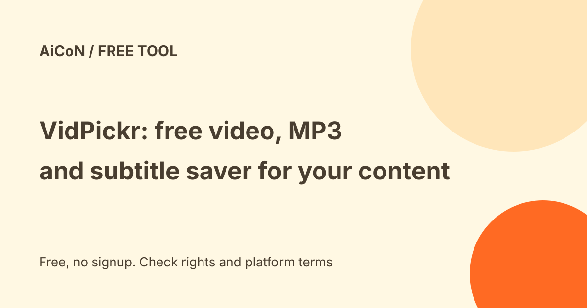

VidPickr: free video, MP3 and subtitle saver for your own content
VidPickr is a free, browser-based tool that saves videos, MP3 audio and subtitles from YouTube, Instagram, TikTok and other sites. Free use needs no account and adds no watermark, with quality up to 8K when the source has it. It is meant for your own uploads, Creative Commons content and other uses you have the right to make.

What does it do?
- Saves video as MP4 in the qualities the source offers, up to 4K and 8K
- Saves audio as M4A (original AAC) or MP3 at 192 kbps
- Downloads subtitles and transcripts as SRT, VTT or TXT, including auto-generated captions
- Works with YouTube, Instagram, TikTok, Twitter or X, Reddit, Facebook, Dailymotion, Twitch, SoundCloud and Bilibili, per its home page
- Runs in a normal browser on Windows, Mac, Linux, iPhone and Android
Good uses
Archiving your own uploads, pulling captions from your own videos to edit them, saving the audio of your own lecture or podcast, and downloading Creative Commons or public-domain material you are allowed to reuse. Its terms also name accessibility uses, such as getting captions or audio tracks to make content usable for someone with a disability.
Free and paid
| Free | No account. Every quality, MP3 and M4A, and subtitles. The site says free is ad-supported and has a short wait before download. |
|---|---|
| Plus | $1 a month (about ₹97) or $9.99 a year (about ₹970), with a 3-day trial. Removes ads and the wait, and adds clip trimming, silence removal, vertical reframing, longer batch downloads and an in-browser AI transcription tool. Renews automatically until you cancel. The pricing FAQ says Sign in → Account → Manage subscription → Cancel; paid features stay available until the billing period ends. Its trial wording is unclear: it says no credit card required up front but also says Stripe collects payment information. Check the checkout's charge date and cancel before trial end if you do not want renewal. |
| Refunds | The terms say seven days from the initial purchase if paid features have not been used meaningfully. The pricing FAQ instead says cancel within 14 days of payment and email for a refund. These promises conflict; confirm the applicable rule before paying rather than relying on the longer window. |
Privacy, as the site describes it
The site says it keeps no download history and stores no video files, and that the video stream goes to your device while merging happens in your browser. It does see the link you submit, and keeps standard server logs for 14 days. Paid accounts store an email address, and Stripe handles payment. The policy also lists Google OAuth for optional sign-in, Resend for account email and an unnamed hosting provider. It says account records remain until account deletion, payment records typically seven years for accounting, and email content 30 days for troubleshooting. It offers access and deletion requests through its contact address; this is not a promise to delete every billing record immediately. This is the company's own description. We have not verified it independently. Avoid private/unlisted or sensitive links unless you are comfortable submitting them to the service.
Things that do not line up
The home page says free covers playlist downloads up to 25 videos, while the pricing page lists batch downloads under Plus. The home page also quotes MP3 up to 320 kbps in one place and 192 kbps in another. The company is governed by the laws of Türkiye. Prices are in US dollars and the rupee figures are approximate using an illustrative ₹97 per dollar conversion, not a verified Indian checkout quote or a guaranteed current exchange rate. We did not verify an India-specific checkout or availability test. Your card's exchange rate, taxes and fees may change the final rupee total.
A careful checklist
- Check that you have copyright rights and that the source platform permits this download method. Use the platform's official export/download when possible.
- Paste the link, pick video, audio or subtitles, and download.
- Skip any pop-up asking for installs or logins that you did not expect.
- Read the terms, refund conflict, renewal date and checkout total before upgrading to Plus.
We did not download anything or test the tool. We read the home page, pricing page, terms and privacy policy on 11 October 2026, and YouTube's terms of service.
Frequently asked questions
Is it free?
Yes for single downloads, with ads and a short wait. Plus is optional.
Is it legal to use?
That depends on the video and your country. Owning the copyright is only one check; the source platform must also permit the download method. Copying others' content can break copyright law and platform terms.
Sources: VidPickr home, pricing, terms, privacy, YouTube terms. Checked 11 October 2026. This is an AiCoN explainer and the tool was not tested.